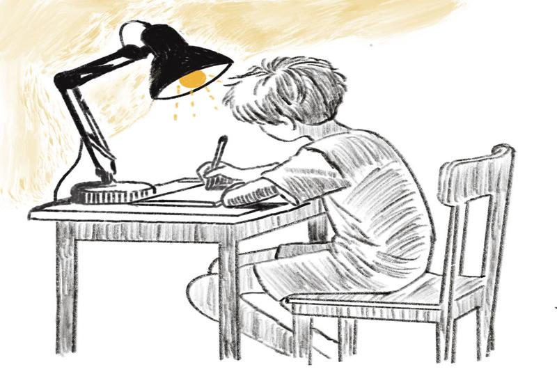

Project Overview
Within the class, I have been engaged in some of the most interesting projects. Probably the most interactive was when I had to enact a rescuer, U, whose task is to liberate a scientist, S, from a rather precarious situation. This project is both fun and builds the stimulation of strategic decision-making. The other project that I have been working on is a simplified version of the Simon Game. That game was intended to carve and extend the old memory game into a modern one. Yet, both projects have been really good learning experiences, offering unique challenges as well as opportunities for creative problem-solving.